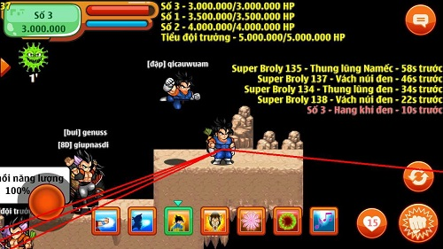
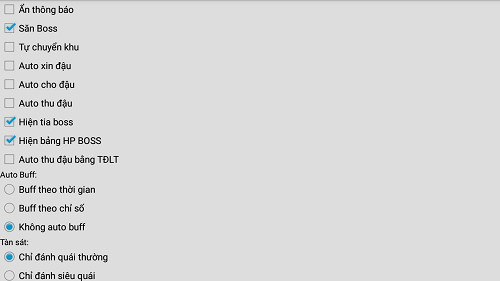
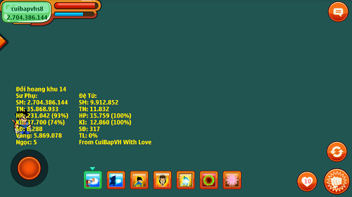
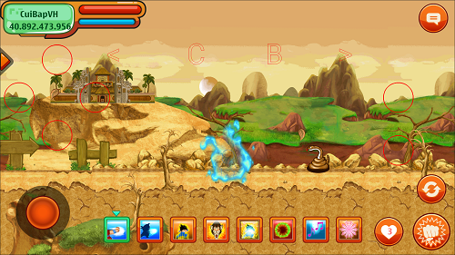

Bản update ngày 07/01/2022
Bản update ngày 07/01/2022- Hãy thử reboot modem Wi-Fi, tắt bật lại 4G nếu không vào được game do dùng các phiên bản bị TeaMobi chặn IP
- Cập nhật Antiban v3 hạn chế khoá acc khi sử dụng các tính năng mod
- Giao dịch NPC cơ chế mới, cập nhật hồng ngọc theo TeaMobi
- Free Auto Captcha v1.2 Beta (NRO.VN captcha v2)
- Phiên bản được phát hành hoàn toàn miễn phí, bạn có thể vào web mua vàng ngọc, nick để ủng hộ CuiBapVH.
• Lưu ý: vui lòng đọc hết để biết tất cả các lệnh mới và các chú ý khi sử dụng!
 1. Siêu cải tiến săn boss
1. Siêu cải tiến săn boss
- Chat: ckX để auto vào khu X khi 14/15.
- Chat: cd để bật/tắt các tính năng.
- Chat: adctt để bật/tắt auto dịch chuyển tức thời Yardrat vào đối tượng đã trỏ.
- Chat: kmtb để bật/tắt auto khoá mục tiêu boss tự động(không thể dùng chung với Chỉ nhặt ngọc(cnn)).
- Chat: xtb để bật/tắt xoá tàu bay capsule giúp sử dụng capsule nhanh hơn.
- Chat: kmap để bật/tắt chống đi qua map khác(vẫn có thể capsule, đổi khu khi dùng tính năng này).
- Chat: sb để bật/tắt nhanh bảng báo boss
- Chat: sanvirus để bật/tắt săn boss virus ^^
- Update tìm boss siêu mạnh: hiển thị HP Boss trong map trên màn hình, tia báo boss đậm hơn, hoạt động ngay cả khi boss vào góc lag, hỗ trợ full server, fix lag!


2. Hiện thông tin sư phụ, đệ tử, map ngay trên màn hình game
- Chat: ttdt để bật/tắt hiển thị thông tin đệ tử
- Chat: ttsp để bật/tắt hiển thị thông tin sư phụ
- Chat: xemtt để bật/tắt đồng thời 2 lệnh trên
- Đã fix lỗi bị bật hành trang lên liên tục.

3. Auto up set kích hoạt
+ Chat: bando để bật/tắt auto bán đồ rác(không bán đồ sao, set kích hoạt).
+ Chat: mtdlt để bật/tắt auto mua tự động luyện tập(nhớ mua ở cửa hàng trước 1 lần).

4. Auto up đệ tử v4.1
- Chat: atd
Bật/Tắt auto cho đệ ăn đậu, mỗi khi đệ tử kêu "Sư phụ ơi cho con đậu thần" thì sư phụ sẽ ăn đậu và "Sao sư phụ không đánh đi" thì sư phụ sẽ sử dụng skill ô thứ 2(có thể gán chưởng, trói, thôi miên, v.v). Tích hợp buff khi thể lực đệ nhỏ hơn 10%.
- Chat: attnl
Bật/Tắt auto Tái tạo năng lượng khi HP hoặc KI dưới thiết đặt trong "cd"
- Chat: ahsnm
Bật/Tắt auto hồi sinh(namec) cho nhân vật trong map
- Chat: nsq
Bật/Tắt auto né siêu quái.(nhớ add quái muốn cho đệ đấm và để đệ ở trạng thái Bảo vệ)
- Chat: akok
Bật/Tắt auto up đệ kaioken.
- Chat: adanh
Bật/Tắt auto dùng skill 2(có thể gán chưởng, trói, thôi miên, v.v) khi cho đệ ăn đậu(chống buff đậu xịt, Mặc định là bật khi cài mod), nếu mua bùa đệ có thể tắt tính năng này để không bị quái pem.
- Chat: atdhp
Bật/Tắt auto buff theo HP đệ (Chat: cd để cài đặt chỉ số, chỉ có tác dụng khi đang bật atd. Mặc định là tắt)
- Chat neboss
Bật/tắt auto tránh boss khi đang auto đệ (Mặc định là tắt)
- Phần đệ tử đã được sửa lại dễ nhìn hơn.
- Sức mạnh, HP, KI sẽ cập nhật liên tục khi mở tab đệ tử.
- Trong khi bật auto đệ, các bạn có thể dùng skill3(auto ttnl) thoải mái nhé!
5. Auto sử dụng item
+ Chat acn: Bật/tắt auto ăn cuồng nộ
+ Chat abh: Bật/tắt auto ăn bổ huyết
+ Chat agx: Bật/tắt auto ăn giáp xên
+ Chat aad: Bật/tắt auto ăn ẩn danh
+ Chat amdcs: Bật/tắt auto dùng máy dò capsule
+ Chat anho: Bật/tắt auto ăn nho khi hết thể lực
6. Auto Reconnect và vào lại khu khi bảo trì, mkn, mất mạng
- Chat: alogin (Bật/tắt auto reconnect)
- Chat: akhu (Bật/tắt đổi về khu cũ trước khi mkn)
7. Auto kí gửi tại Siêu thị
+ Chat: kigui
Bật/tắt auto kí gửi đậu, ngọc rồng, v.v bằng vàng
- Kí một lần làm mẫu ở Cửa hàng kí gửi một lần rồi mới chat lệnh nhé.
- Trong lúc đang auto kí KHÔNG click vào Của hàng kí gửi, nếu không sẽ bị lỗi

8. Mod 8 ô skill dùng cùng lúc và thời gian hồi skill
+ Chat: gsk
Bật/tắt auto gán skill theo thứ tự trước khi out game.(gán skill v2)
- Mặc định khi cài game là Bật, khi tài khoản đăng nhập lần đầu sẽ tự gán tất cả các ô skill.
+ Chat: hoiskill
Bật/tắt hiển thị thời gian hồi skill
- Mặc định khi cài game là Bật.
+ Chat: loadskill
Bật/tắt vào game tự gán luôn 8 ô skill(gán skill v1)(khi bạn bật auto up đệ, sau khi reconnect phiên bản KHÔNG tự gán lại các ô skill)

9. Cải tiến tàn sát và TĐLT
+ Chat: tsall
để bật tính năng qua map vẫn tàn sát.(ví dụ qua các map trong doanh trại độc nhãn)
+ Chat: tsv2
để bật tính năng quản lí Tự động luyện tập qua bản mod (TĐLT có thể add quái như ts)
+ Có thể kết hợp skillX(X là số thứ tự của skill) để auto dùng skill một cách mượt mà (nhớ thêm ô đấm vào nhé)
+ Nếu tàn sát bị delay hoặc lag, hãy chỉnh tốc độ game xuống 60 hoặc 70. Ví dụ: chat td60 để chỉnh tốc độ game về 60.
Hoặc trỏ vào skill đấm rồi chat theo công thức c+(thời gian hồi chiêu+200). Ví dụ chiêu đấm Galick có thời gian hồi là 500mili giây thì chat c700.
Cải tiến mới: khi bật hành trang thì nhân vật vẫn tàn sát.
9. Menu Pro: Chat "mkhoa" để Ẩn hoặc Hiện Menu Chạm Pro

tai ngoc rong, tai ngoc rong 194, nro 194, nro mod
- 4 Nút Tròn Trái: Ứng với 4 nút khinh công, độn thổ, dịch trái, dịch phải
- Nút <: Dịch trái map
- Nút >: Dịch phải map
- Nút C: Dùng capsule bay nhanh
- Nút B: Dùng bông tai nhanh
- Nút Tròn Phải: Goto đến đối tượng đang chọn (quái, npc, vật phẩm, nhân vật khác)
- Nút Tròn Góc Phải: Khoá mục tiêu nhân vật đang trỏ, nếu bạn đang dùng Khoá mục tiêu boss(kmtb) thì tránh ấn nhầm phần này.
• Lưu ý:
- Còn nhiều tính năng khác vui lòng xem phía dưới
- Vào game tốc độ di chuyển là 8 (bạn có thể giảm xuống nếu bị lag) và bật auto nhặt.
- Các tính năng loadskill, adanh, neboss, tsall, antk sẽ được lưu lại và bạn không cần phải thiết lập lại mỗi khi vào game.
- Danh sách máy chủ trong game sẽ được tự động cập nhật theo TeaMobi.
 Shop Bán Vàng x4k5, Giá ngọc 100k có ngay 600n (Giao dịch tự động). Mua Ngay Tại BanVangNgoc.VN
Shop Bán Nick - Dịch Vụ Game NRO - DichVuGame.VN
Shop Bán Vàng x4k5, Giá ngọc 100k có ngay 600n (Giao dịch tự động). Mua Ngay Tại BanVangNgoc.VN
Shop Bán Nick - Dịch Vụ Game NRO - DichVuGame.VN
• Lệnh Chat Trong Bản NRO SuperMod Pro CuiBapVH Android:
Lưu Ý: Các số sau chữ màu đỏ các bạn có thể tự chỉnh được nhé!
mkhoa: Mở menu chạm pro
cd: Mở menu cài đặt
goirong: Gọi thử rồng một lần rồi chat để chạy auto gọi rồng!
zX: Chỉnh zoom màn hình mức X (X từ 0 - 4, 0 là tự động điều chỉnh, nếu bị lỗi map thì hãy bật xoá địa hình(xdh))
autobdkb: Bật/tắt auto vào bản đồ kho báu(nhớ làm mẫu trước một lần ở Quy lão Kame rồi mới chat)
autoflag: Bật/tắt auto bật tắt cờ(nhớ bật cờ đen trước khi chat)
hoiskill: Bật/tắt hiển thị thời gian hồi skill
fpscao: Bật/tắt chế độ Fps cao(beta)
kmt: Bật/tắt khoá mục tiêu đang trỏ
vechai: Auto làm nhiệm vụ bán 200 món đồ(mở npc ở làng một lần trước khi bật)
attnl: Bật/tắt auto tái tạo năng lượng theo % HP và KI trong "cd"
atn: Bật/tắt auto chạy đi nhặt(có thể kết hợp với kvt + s8 để nhặt vật phẩm do đệ đánh rơi).
sdark: Bật/tắt chế độ SuperDark
dark: Bật/tắt xoá ánh mặt trời, bật nên tối và xoá hiệu ứng hợp thể
ckX: Chen vào khu X khi khu X 14/15.
kmtb: Bật/tắt khoá mục tiêu boss tự động(phải bật săn boss trong cd)
sb: Bật/tắt bảng thông báo boss nhanh
nhatnr: Bật/tắt cho phép auto nhặt ngọc rồng namec, ngọc rồng sao đen
ahsnm: Bật/tắt auto dùng skill hồi sinh(namếc)
autoclan: Bật/tắt auto mời mọi người trong map vào bang
autogd: Bật/tắt auto mời mọi người trong map giao dịch
autoclan1: Bật/tắt auto mời đối tượng đang trỏ vào bang
autogd1: Bật/tắt auto mời đối tượng đang trỏ giao dịch
atdt: Bật/tắt auto mở doanh trại độc nhãn(phải đứng ở rừng Bamboo)
xhq: Bật/tắt xoá hào quang nhân vật(để giảm lag)
adctt: Bật/tắt auto dịch chuyển tức thời tới nhân vật đã trỏ(khi nhân vật rời map)
kmap: Bật/tắt khoá map, chặn chuyển qua map khác(vẫn có thể dùng capsule, đổi khu)
xtb: Bật/tắt xoá tàu bay capsule, dùng capsule chuyển map siêu tốc
upskh: Bật/tắt auto up set kích hoạt
mtdlt: Bật/tắt auto mua TĐLT
fake1: Bật/tắt "fake" đối tượng đang trỏ
copynv: Gán dữ liệu cho "fake1"
tsv2: Bật/tắt tàn sát v2(xem ở trên)
kigui: Bật/tắt auto kí gửi ở Siêu thị
cXXXX: Fake thời gian hồi skill là XXXX mili giây
acn: Bật/tắt auto ăn cuồng nộ
abh: Bật/tắt auto ăn bổ huyết
agx: Bật/tắt auto ăn giáp xên
aad: Bật/tắt auto ăn ẩn danh
amdcs: Bật/tắt auto dùng máy dò capsule
anho: Bật/tắt auto ăn nho khi hết thể lực
cmapv2: Bật/tắt chuyển map v2(dùng tự động luyện tập - mặc định là bật)
ttdt: Bật/tắt hiển thị thông tin đệ tử trên màn hình
ttsp: Bật/tắt hiển thị thông tin sư phụ trên màn hình
xoamenu: Bật/tắt xoá tất cả thông báo rác trong game(bật tính năng này sẽ không thể ấn vào NPC)
atnv2: Bật/tắt auto dctt khi auto nhặt
skillgoc: Bật/tắt hiển thị vị trí ô skill ở giữa như bản gốc.
abt: Bật/tắt auto dùng bông tai
abtX: Bật/tắt auto dùng bông tai theo thời gian, với X là khoảng thời gian chờ, đơn vị mili giây, tối thiểu 1000mili giây
chinhatngoc hoặc cnn: Bật/tắt chỉ nhặt ngọc xanh v2(chỉnh tốc độ nhặt chat cd, tốc độ 500 là tối ưu) Lưu ý: KHÔNG bật ẩn người khi dùng lệnh này nhé, nếu bật sẽ lỗi hiển thị item, KHÔNG cần bật tàn sát tính năng này vẫn hoạt động.
xemtt: Bật/tắt hiện thông tin nick ở màn hình game
nsq: Bật/tắt up đệ né siêu quái
bando: Bật/tắt auto bán đồ(chỉ áp dụng tại map thứ 3 kể từ mỗi làng)
dkbd: Bật/tắt đổi lại khu cũ sau khi bán đồ(dkbd = đổi khu bán đồ)
canhbao: Bật/tắt cảnh báo bằng âm thanh khi có captcha
rkhu: Bật/tắt autoload phần đổi khu vực
addvp: Thêm vật phẩm đang trỏ vào danh sách lọc
anvp: Bật/tắt lọc vật phẩm theo danh sách(chỉnh sửa danh sách chat cd)
gsm: Auto Giảm sức mạnh bằng yardrat (xem hướng dẫn ở trên)
gsmngoc: Auto Giảm sức mạnh bằng ngọc (xem hướng dẫn ở trên)
alogin: Auto Reconnect khi mất kết nối, bảo trì
akhu: Auto đổi lại khu trước khi mkn(dùng kết hợp với alogin)
loadskill: Bật/tắt auto gán skill khi vào game
akok: Bật/tắt auto up đệ kaioken
xoatb: Bật/tắt xoá thông báo khi vào game
pthp: Bật/tắt hiện %hp các nhân vật trong map
ahs: Bật/tắt auto hồi sinh bằng ngọc
atd: Bật/tắt auto đệ tử
atdhp: Bật/tắt auto buff đậu theo HP đệ
adanh: Bật/tắt auto đánh khi buff đậu cho đệ(Mặc định là bật)
mocskb: Bật/tắt auto mở cskb
antk: Bật/tắt che tài khoản
fakeid: Fake tên nhân vật(chat cd để thiết lập tên nv cần fake)
neboss: Bật/tắt auto tránh boss khi đang auto đệ
nrsd: Bật/tắt auto nhận ngọc rồng sao đen (phải đứng ở trạm tàu vũ trụ nhé)
xdh: Xoá địa hình
npcX: Gọi NPC số X(đã bị fix gần hết)
annpc: Bật/tắt ẩn NPC
anquai: Bật/tắt ẩn toàn bộ quái, Khi Tắt cần chuyển khu, map hoặc chờ Quái mới xuất hiện)
anitem: Bật/tắt ẩn toàn bộ Item vật phẩm
annguoi: Bật/tắt ẩn toàn bộ người chơi
cmap: Load map, tuy nhiên qua map sẽ chậm do game đã fix không cho dịch chuyển nhanh nữa
skillX: Bật/tắt Auto skill số X
tuonglai: Mở menu Calic để đi tới tương lai(chỉ áp dụng ở map Rừng Bamboo, Rừng Dương Xỉ(trái đất) và Nam Kame)
atcl: Mở giao diện cài đặt Auto Click
acl: Bật/tắt Auto Click
kvt Khóa vị trí hiện tại sẽ không còn bị bay lên nữa
add: Chỉ vào quái và chat để thêm con quái đó vào danh sách lựa chọn.
addd: Chỉ vào quái và chat để tàn sát một loại quái có tên tương ứng với quái chỉ vào
rcvt: Xóa hết danh sách.
atc: Bật/tắt auto chat
tdX: Chỉnh tốc độ X
kX: Chuyển đến khu số X
c: Đóng băng skill đang chọn (KI tiêu hao bằng 0, thời gian hồi chiêu băng 0)
ts: Bật/tắt tàn sát
anhat: Bật/tắt auto nhặt đồ (mặc định là bật)
bang: Bật/tắt đóng băng quái
ak: Bật/tắt tự đánh
akX: Bật/tắt tự đánh theo thời gian, với X là khoảng thời gian đánh, đơn vị mili giây, tối thiểu 500mili giây
vangX: Fake vàng số X
ngocX: Fake ngọc số X
smX: Fake sức mạnh số X
tnX: Fake tiềm năng số X
sX: Cheat giày số X
u: Khinh công
d: Độn thổ
r: Dịch phải
l: Dịch trái
uX: Khinh công số X
dX: Độn thổ số X
rX: Dịch phải số X
lX: Dịch trái số X
+ Tác Giả: CuiBapVH Và Cảm Ơn WapVip.Pro - NRO v1.6.7 Premium ❤️
CuiBapVH KHÔNG thu thập, can thiệp vào bất cứ dữ liệu nào của người dùng
Phiên bản được phát hành hoàn toàn miễn phí. Do điện nước, mạng mẽo và chất xám không miễn phí nên website sẽ có chút quảng cáo, các bạn chỉ cần sử dụng và chia sẻ là đã tạo nguồn động lực rất lớn cho mình rồi ❤️
Bắt đầu từ v2.1 Updated 10 Server mình sẽ tiến hành đặt QC ingame nên khi đăng nhập có thể sẽ có 1 IP lạ là server của mình(THONGBAO.NRO.VN), IP này sẽ chỉ xuất hiện lần đầu tiên trong ngày bạn mở game. Bản mod đã mã hoá mã nguồn, một số máy sẽ không quét được virus và cho luôn bản mod là virus, bạn hãy nhấn bỏ qua, cài game sau đó sử dụng bình thường.
Nếu trình duyệt hỏi có cho phép thông báo hay không, vui lòng chọn Chặn để không bị push QC làm phiền!
Cảm ơn bạn đã sử dụng sản phẩm của CuiBapVH!
Hiện Tại CuiBapVH Đã Dừng Update PB Sẽ Chỉ Dừng Lại Ở [NRO] Version 1.9.1 [Android]
Shop Bán Vàng x4k5, Giá ngọc 100k có ngay 600n (Giao dịch tự động). Mua Ngay Tại BanVangNgoc.VN
Shop Bán Nick - Dịch Vụ Game NRO - DichVuGame.VN
ngày 07/01/2022